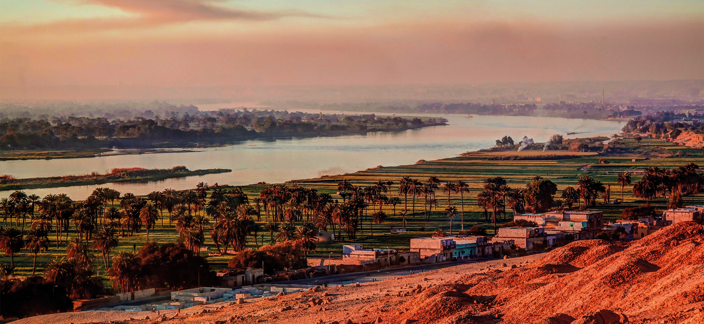
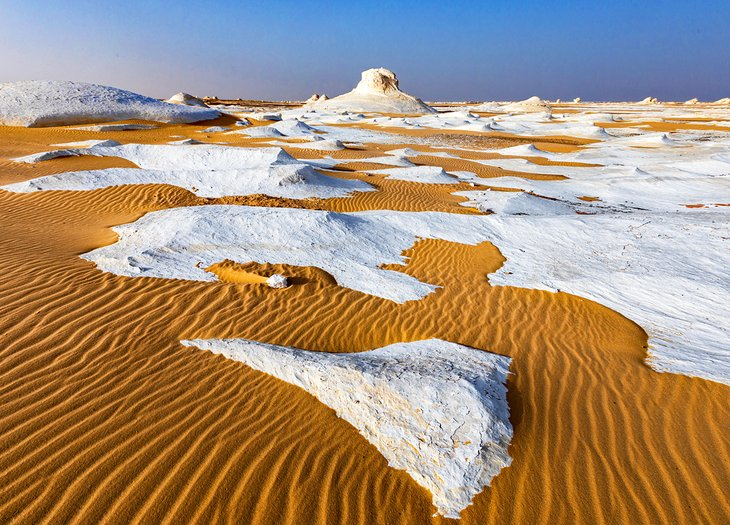

Visit The Pyramids of Giza
The last surviving wonder of the Seven Wonders of the Ancient World, the Pyramids of Giza are one of the world's most recognizable landmarks. These tombs of the Pharaohs Khufu, Khafre, and Menkaure, guarded by the enigmatic Sphinx, are usually top of most visitor's lists of tourist attractions to see in Egypt and often the first sight they head to after landing.

Cruise The Nile River
Cruising the Nile is the most relaxing way to see the temples that stud the banks of the river on the route between Luxor and Aswan, plus sunrise and sunset over the date-palm-studded river banks, backed by sand dunes, is one of Egypt's most tranquil vistas.

Camp in the White Desert
The wind-sculpted chalk rock outcrops of White Desert National Park are the Western Desert region's most surreal landscapes and prime territory for desert camping trips under star-strewn skies. Trips can be organized in Bahariya Oasis, which is also the easiest oasis to reach from Cairo.